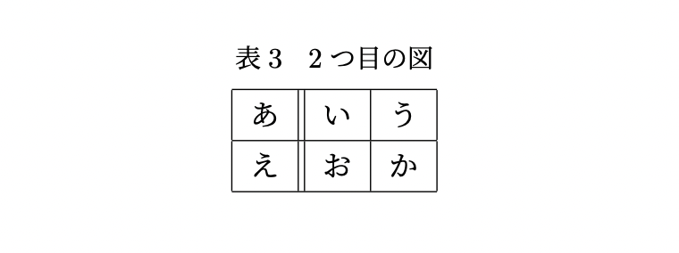

Macの場合
Windowsの場合
TeX では表も作ることができます。情報の整理として表を用いるととても効果的で、可読性が高まります。
表は、図と似たように table で囲んでその中に tabular を設置することによって作ることができます。
\begin{table}[htb]
\centering
\caption{1つ目の図}
\begin{tabular}{lll}
あ & い & う \\
え & お & か
\end{tabular}
\caption{下にもつけられる}
\end{table}
まず、\centering によって表を中央揃えすることができます。
次に、\caption{} によって表のタイトルを付けることができ、例のように tabular の前に置くか後ろに置くかで表示位置が変わります。
ただし、 caption の呼び出し回数によって表番号が増えるので 1つの表に複数の captionを入れるべきではありません。
4行目では、各列の文字の位置を決めていて、l:左揃え・c:中央揃え・r:右揃えになります。 このアルファベットは省略することができず、中身の列の数と一致していないとエラーが出ます。
tabular の中身は & によって列を区切ることができ、改行によって行を区切ることができます。
表は table で囲まずに直に tabular を設置しても作ることができます。 table によって位置を詳細に設定する必要がなければつけなくても構いません。
表には罫線を入れることができます。列の方向の線であれば tabular の設定部分で、行の方向の線であれば \hline で入れることができます。 次の例を見てみましょう。
\begin{table}[htb]
\caption{2つ目の図}
\centering
\begin{tabular}{|l||l|l|} \hline
あ & い & う \\ \hline
え & お & か \\ \hline
\end{tabular}
\end{table}

余談ですが日本人はやたら罫線を入れたがると言われていて、特に列方向の罫線はあまり使うべきではないという風潮になってきています。